Content
- Introduction Text Visualisation
- Text data
- Text Visualisation Methods
- Tag Cloud
- Wordle
- Word Tree
- Phrase Nets
- R Packages for Text Visualisation
School of Computing and Information Systems,
Singapore Management University
07 May 2024
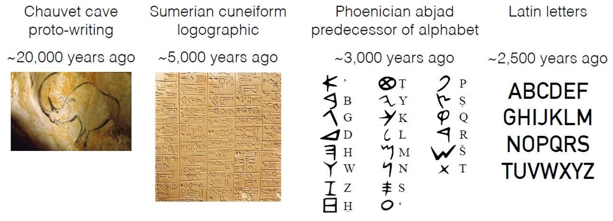
Be warn, not all text are written in English and in digital forms!
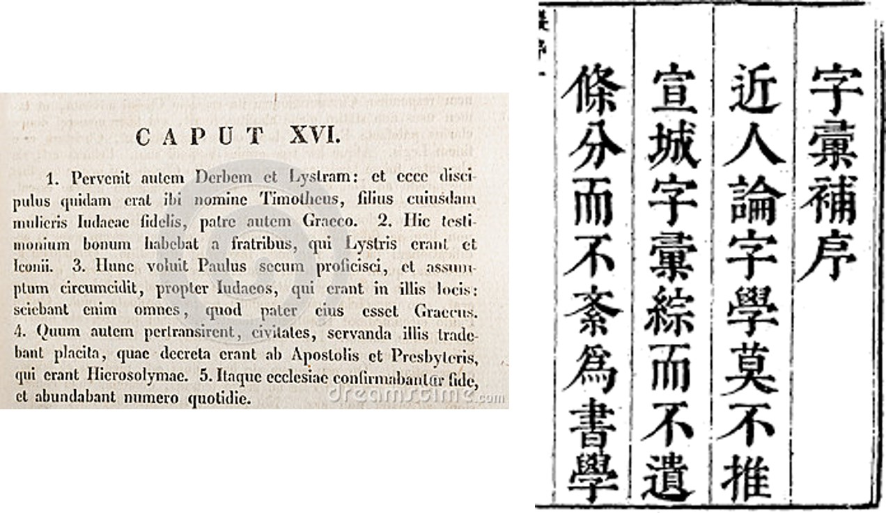
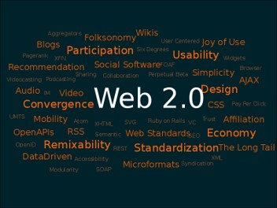
Source: Tag cloud
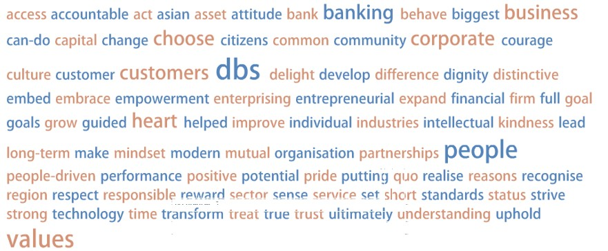
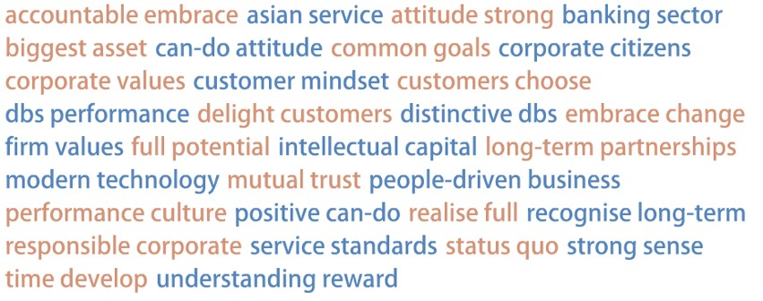
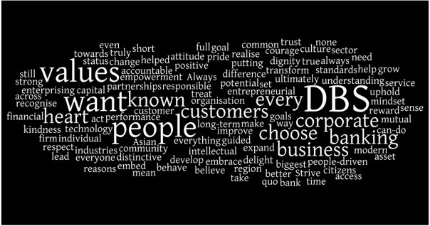
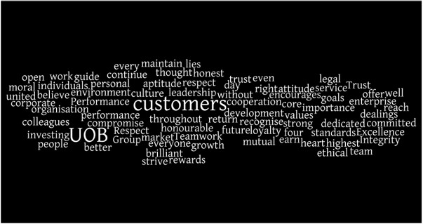
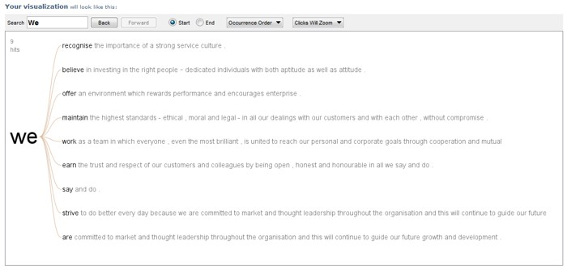
Source: wordtree
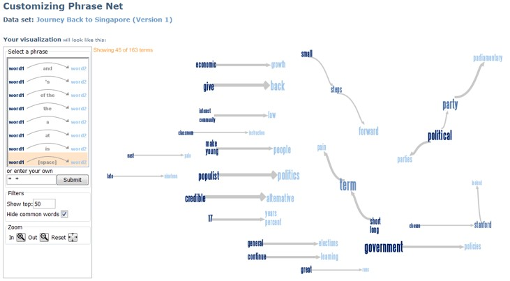
Words separate by the keyword “and”
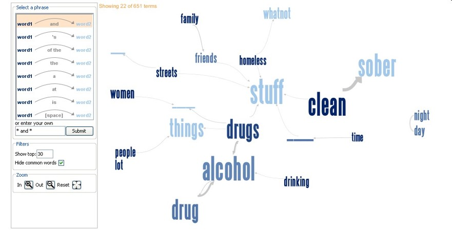
Words that directly follow one another
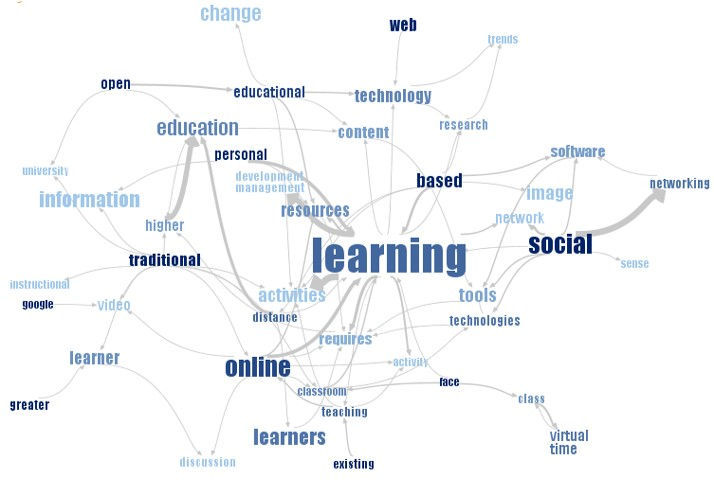
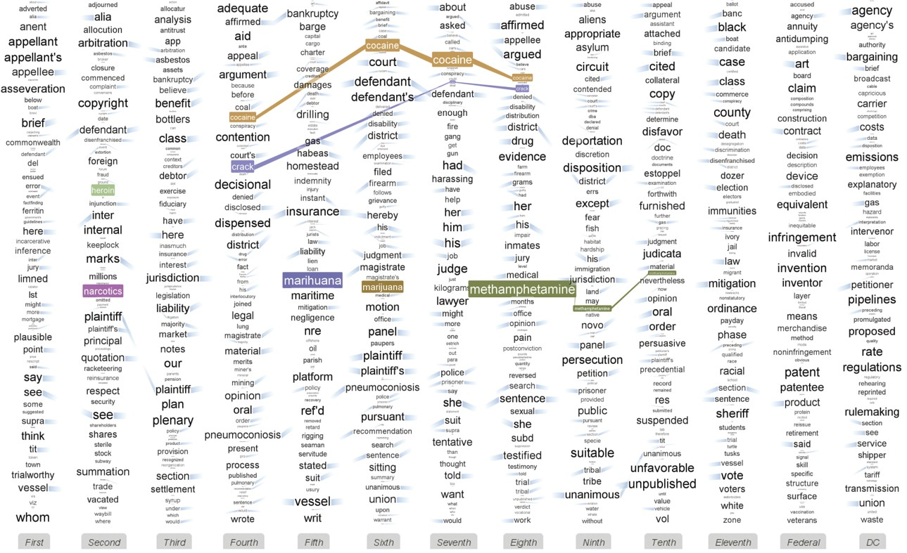
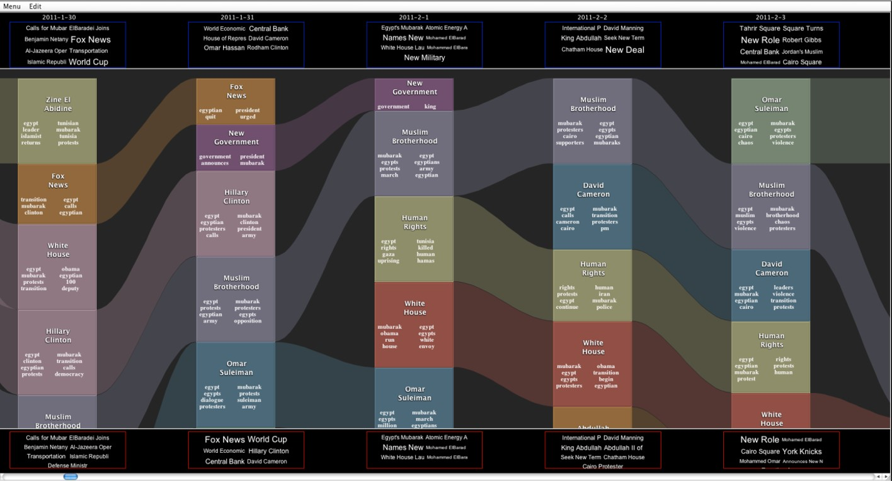
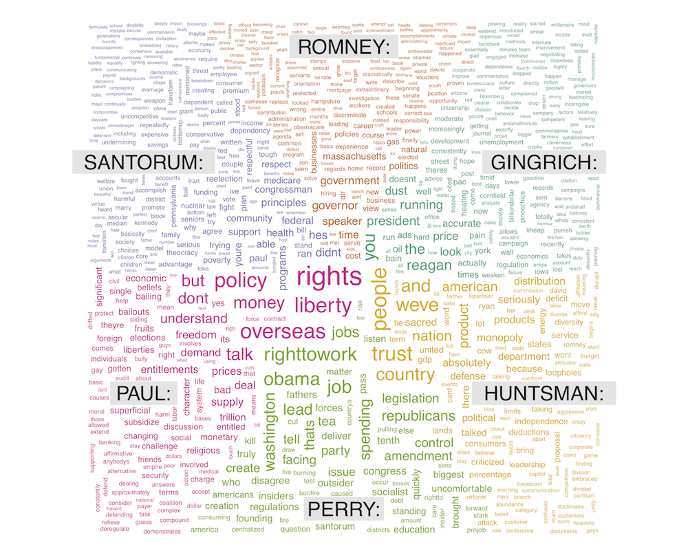
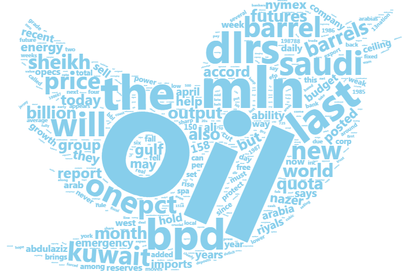
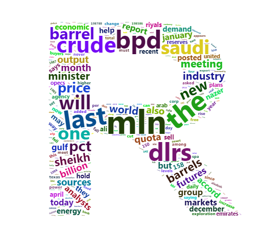
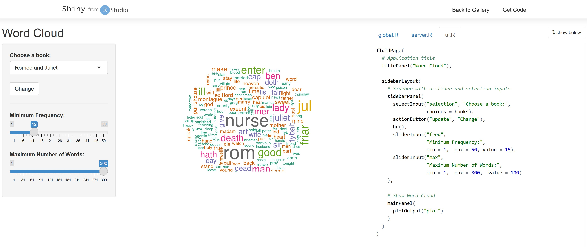
For live demo, visit this link
Aims to visualise complex relations in texts.
Provides functionalities for displaying text co-occurrence networks, text correlation networks, dependency relationships as well as text clustering.
Visit this link for more information.
This example visualises the result of a text annotation which provides parts of speech tags and dependency relationships.
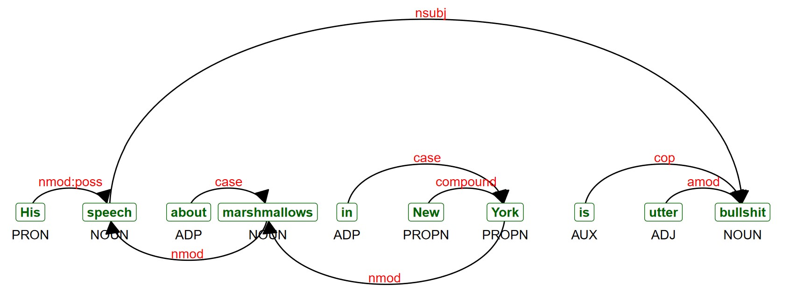
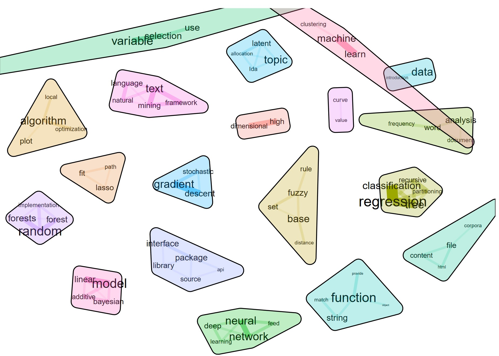
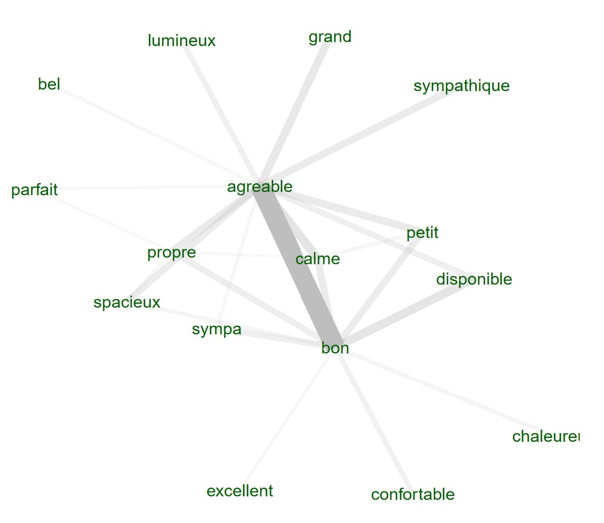
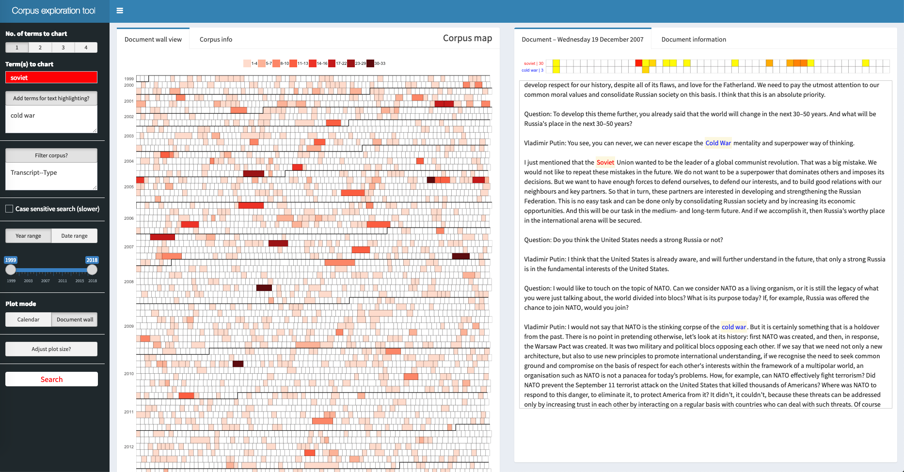
Reference: Bail, Christopher A. (2016) “Combining Network Analysis and Natural Language Processing to Examine how Advocacy Organizations Stimulate Conversation on Social Media.” Proceedings of the National Academy of Sciences, 113:42.

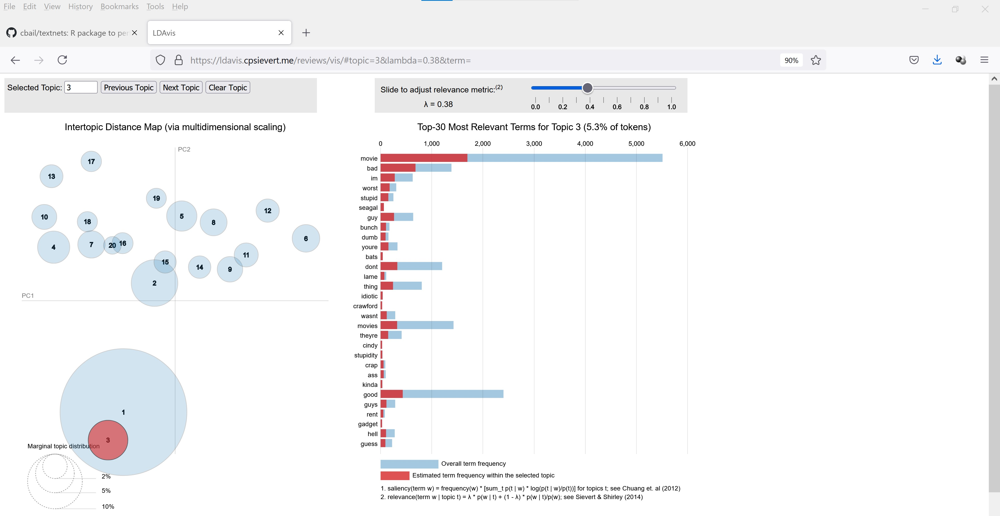
Source: For live demo, visit this link.
Cao, Nan and Cui, Weiwei (2016) Introduction to text visualization, Springer. This book is available at smu e-collection.